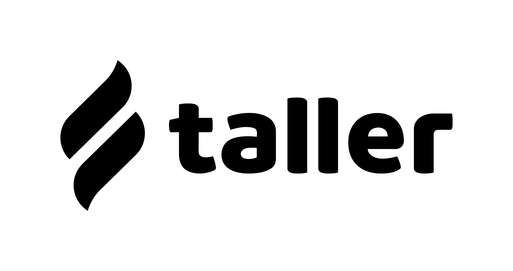

Kanban com chat ao vivo no espírito do dojo. Mova cards, converse no Tatami, suba na sala pra resolver junto — tudo num só lugar, guiado pelo Mestre Kan.
A maioria das ferramentas te força a abrir cada projeto separado pra saber o que está acontecendo. O Synkan agrega cards de todos os seus boards numa vista única.

taller';" />A Taller é referência em gestão ágil e produtividade. O modelo de Fluxo Unificado que eles propõem é baseado nos sistemas puxados da Toyota e na teoria das filas aplicada a desenvolvimento de produto (Don Reinertsen) — uma resposta tática pra ambientes com alta variabilidade, onde times isolados em projetos próprios viram filas paradas e impacto econômico real.
Em vez de cada time ter sua própria fila, o trabalho de múltiplos projetos passa por um pipeline compartilhado. Isso reduz custo de coordenação, aumenta a previsibilidade e — segundo as pesquisas do Reinertsen citadas no post — pode reduzir a variabilidade em até 3x.
O Board Unificado do Synkan é nossa tradução visual desse conceito pro dia-a-dia de quem gerencia múltiplas frentes: agregamos cards de todos os seus boards numa vista única, com filtros e identificação de origem, pra você ver o todo sem precisar abrir 5 abas.
Os mesmos cards organizados de seis formas diferentes — Kanban, Table, Checklist, Gantt, Calendário e Dashboard. Trocar é instantâneo. Cada card é um movimento.
Colunas customizáveis com drag & drop e WIP limits.
Linhas e colunas. Sort, filtro e edição inline.
Lista pra marcar o que fechou. Com confete.
Timeline com escala dia/semana/mês e barras por prazo.
Cards pelas suas deadlines, no mês ou na semana.
KPIs, funil de vendas com forecast e exportação em PDF com a sua marca.
Cada caminho do dojo conversa com os outros. Uma pessoa nova entra pelo People Journey com trilha customizada. O 1:1 dela nasce no Syncal e vira card no kanban com pauta pronta. Um lead capturado no Synconnect vira card no kanban e progresso nos OKRs. Uma conversa no Tatami "sobe no tatame" — chamada ao vivo com board projetado. Anexos caem no Bunko Box, número atualiza no Zai, hora entra no Tracker. Tudo conectado, no espírito do dojo.
"Pratique uma técnica até virar instinto. Depois a próxima. Não tente fazer tudo igualmente bem ao mesmo tempo." — Mestre Kan
O lugar onde o time se encontra. Comece com chat por canal (texto, threads, kudos), suba no tatame com 1 clique pra voz/vídeo/screen share, projete Board ou OKR dentro da sala, grave em MP4 e a IA transcreve.
Pipeline kanban arrastável, deals com múltiplos contatos (decisor + técnico + influenciador), Customer 360 e captação pública. Comercial inteiro num só lugar — sem CRM separado.
Da Lua Nova à Lua Cheia. Trilhas customizadas por papel (dev, vendas, design) cobrem cada fase da pessoa na empresa — chegada, crescimento e saída — com tudo gerado automaticamente no Bunko, Tatami e Syncal.
Espaço pra pensar antes de virar tarefa. Mindmap, doc colaborativo, planilha com fórmulas, fluxograma, OKR canvas, simulador. Mestre Kan gera o canvas inteiro a partir de um tema.
Não é lista bonita de objetivos. É sistema vivo: check-ins semanais com confidence, burndown chart, cascading entre áreas e auto-track de KRs vindo de boards/Zai/Synconnect/People.
Sem fluxo de caixa complicado. Cards ganham tipo (Receita / Custo) e o sistema calcula runway, burn rate e saldo projetado sozinho. Simule cenários sem mexer no caixa.
▶ Inicie o timer em qualquer card. Vira relatório de horas por pessoa/board/coluna/dia e invoice em PDF pronto pra mandar ao cliente do Synconnect.
Não é "feature de IA" — é o sensei. Ouve, transcreve, sugere. Em primeira pessoa. Transcrição é grátis (🧘); ações deliberadas (⚔️) consomem cota. Tem voz própria (Vishchun · Carpathian Elder).
Drive + base de conhecimento juntos. Páginas markdown editáveis, transcrições do Mestre Kan que entram sozinhas, gravações MP4 com play direto. Cmd+K busca em tudo.
XP, faixas (branca → preta 10° dan), conquistas e missões diárias. Sempre opcional — desliga em 1 clique. Faixa não muda preço, marca maturidade no kata.
A agenda que entende seu workspace. Cards com prazo viram eventos, eventos viram tarefas. Convidados externos sem conta Synkan entram com link único + .ics.
.ics individualNão é webhook — é uma app instalada no seu workspace. Notifica, recebe comandos e responde no chat.
/synkan novo abre modal pra escolher board + prioridade + deadline; /synkan listar mostra cards abertosNotificações automáticas de cards e leads no WhatsApp da sua equipe — em números individuais ou grupos.
Conecta seu Google Calendar (OAuth) e os deadlines aparecem em menos de 1 segundo — sem .ics, sem URL webcal pra colar, sem espera de horas.
A equipe começa o dia sabendo o que está vencido, o que vence hoje e o que está concluído — sem ninguém abrir o app.
Importa lançamentos do Granatum direto pra um board kanban com 4 colunas (a vencer, atrasado, pago, histórico). Drag-drop atualiza o status no Granatum em tempo real.
Não é só um título e uma data. É contexto, conversa, tempo trackeado, IA, gente.
Tudo o que você espera de um card de verdade.
Recursos que sua antiga ferramenta provavelmente não tem.
O Lab é um canvas multi-formato. Você escolhe como pensar — mapa de ideias, documento, tabela, plano de ação ou em branco.
Quando uma ideia amadurece, ela vira card de board com 1 clique. Sem reescrever nada.
Ah, e o Mestre Kan IA gera o canvas inteiro a partir de um tema. Você só refina.
Abra um template e o board já vem com colunas, marcadores, campos personalizados e cards de exemplo.
Não é só pra organizar o trabalho — é pra apresentar pro cliente. Dashboard executivo, funil de vendas e cobrança por hora trabalhada, exportando em PDF com a cara da sua empresa.
Throughput, cycle time, aging e prioridades num PDF que sai com o logo e o nome da sua empresa no topo. Manda direto pro cliente, sem precisar montar slide.
Pipeline total, forecast ponderado (valor × probabilidade por etapa) e taxa de conversão calculados sozinhos. Basta o board ter um campo de moeda.
O Tracker vira invoice em PDF com a sua marca, valor por hora, período customizável e cliente do Synconnect. Relatório de horas pronto pra enviar.
Comece com 7 dias grátis pra conhecer o dojo. Sem cartão necessário. Cancele quando quiser, pagamento em reais, recibo por e-mail.
Precisa de algo sob medida? Fale com a gente.
Sem trocar de plano. Pague uma vez, use quando quiser.
Acabou a cota mensal de IA do plano? Compre um pacote one-time. Créditos não expiram, somam ao saldo do mês.
Notificações no WhatsApp da sua equipe. Mensagens ilimitadas via Z-API, suporte concierge incluso.
| Recurso | Iniciante Faixa Branca Grátis | Conheça o Dojo 7 dias grátis Trial · sem cartão | Pessoal Faixa Azul R$ 15,90/mês | Profissional Faixa Roxa R$ 39,90/user/mês | Mestre · Sensei Faixa Preta R$ 89,90/user/mês |
|---|---|---|---|---|---|
| Comunicação · Tatami | |||||
| Canais ilimitados | ✓ | ✓ | ✓ | ✓ | ✓ |
| Histórico do chatTempo de retenção | 30 dias | liberado | 90 dias | ∞ | ∞ |
| Tatame ao vivoVoz + vídeo + screen share | × | ✓ | × | ✓ | ✓ |
| Gravação MP4 do TatameHoras por mês | × | 5h/mês | × | 5h/mês | 30h/mês |
| Transcrição IA · Mestre KanAutomática nas gravações | × | ✓ | × | ✓ | ✓ |
| Mapa visual de canaisVisão dojo (ukiyo-e) | × | ✓ | ✓ | ✓ | ✓ |
| Kudos · elogios com XPSó em canais 3+ pessoas | × | ✓ | ✓ | ✓ | ✓ |
| Selo de honra · compromisso públicoSó em canais 3+ pessoas | × | ✓ | ✓ | ✓ | ✓ |
| People Journey · onboarding estruturado | |||||
| Trilha de onboardingLua Nova → Lua Cheia com etapas, prazos e categorias | × | ✓ | × | 3/mês | 10/mês |
| Templates de trilha por papelDev, vendas, design, etc | × | ✓ | × | ✓ | ✓ |
| Pulse check-insMestre Kan pergunta a cada 7 dias | × | ✓ | × | ✓ | ✓ |
| Bunko Box automáticoPasta People · [Nome] com 4 subpastas | × | ✓ | × | ✓ | ✓ |
| Canal de chat privado#onboarding-[nome] criado automático | × | ✓ | × | ✓ | ✓ |
| Gestão de pessoas · acompanhamento contínuo | |||||
| Notas do gestor (timeline)Observação · Elogio · Preocupação · Ação | × | ✓ | × | ✓ | ✓ |
| 1:1s registrados + SyncalPauta + ata + action items + humor | × | ✓ | × | ✓ | ✓ |
| Celebrações automáticasAniversário pessoal + aniversário na empresa postados no Tatami | × | ✓ | × | ✓ | ✓ |
| PDI · Plano de Desenvolvimento IndividualCadência customizável + metas + auto-avaliação | × | ✓ | × | × | ✓ |
| Feedback 360De pares, clientes, gestor · com modo anônimo | × | ✓ | × | × | ✓ |
| Evolução de carreira · trilhas pós-graduação | |||||
| Trilhas de senioridadeJúnior → Pleno → Sênior → Staff com critérios mensuráveis | × | ✓ | × | ✓ | ✓ |
| Templates customizáveisCritérios técnicos, soft skills e impacto · com pesos | × | ✓ | × | ✓ | ✓ |
| Milestones com evidênciaAuto-marca + validação do gestor · markdown | × | ✓ | × | ✓ | ✓ |
| Solicitação formal de promoçãoAuto-avaliação + review do gestor · threshold customizável | × | ✓ | × | ✓ | ✓ |
| Comitê de calibraçãoVotação multi-gestor pra reduzir viés em promoções | × | ✓ | × | × | ✓ |
| Auto-iniciar após graduaçãoPessoa gradua do onboarding e entra na trilha de carreira | × | ✓ | × | ✓ | ✓ |
| Offboarding · saída estruturada | |||||
| Checklist categorizadoDocs · Acessos · Handover · Conhecimento · Equipamento · Despedida | × | ✓ | × | ✓ | ✓ |
| Canal #handover no TatamiAuto-criado privado · pessoa + gestor + sucessor | × | ✓ | × | ✓ | ✓ |
| Templates por tipo de saídaResignação · desligamento · acordo mútuo · aposentadoria | × | ✓ | × | ✓ | ✓ |
| Tarefas bloqueadorasImpedem conclusão até resolvidas · revogar acessos, devolver equipamentos | × | ✓ | × | ✓ | ✓ |
| Exit interview + feedbackColeta estruturada da pessoa sobre a empresa | × | ✓ | × | ✓ | ✓ |
| Sucessor designadoKnowledge handover direcionado · pessoa que assume | × | ✓ | × | ✓ | ✓ |
| Syncal · agenda integrada | |||||
| Eventos manuaisReuniões, tarefas com hora, lembretes | 10/mês | ∞ | ∞ | ∞ | ∞ |
| Google Calendar / Outlook syncBidirecional + cards de board | × | ✓ | ✓ | ✓ | ✓ |
| RSVP + lembretesConvidados respondem · notificação por email | × | ✓ | ✓ | ✓ | ✓ |
| Booking pagesPágina pública compartilhável onde a pessoa agenda direto na sua agenda | × | ✓ | × | 1 página | ∞ |
| Polls de horárioDisponibilidade colaborativa · decide em grupo no Tatami | × | ✓ | × | ✓ | ✓ |
| AI sugestão de horárioMestre Kan acha o melhor slot | × | ✓ | × | × | ✓ |
| Gestão de tarefas | |||||
| Boards Kanban | 12 com Zai ativo | 5igual à Azul | 5 | 20 | 100 |
| Lab (canvas)Mindmap, fluxos, documentos, OKR canvas | 1 | 5igual à Azul | 5 | 20 | 100 |
| OKRs ativos | 1 | 10preview Roxa | 3 | 10 | 30 |
| Board UnificadoVista agregada | ✓ | ✓ | ✓ | ✓ | ✓ |
| Bunko Box · armazenamento | |||||
| Espaço totalPDFs, planilhas, contratos, gravações, anexos | 100 MB | 5 GB | 5 GB | 50 GB | 200 GB |
| Páginas markdownWiki + transcrições + docs | ✓ | ✓ | ✓ | ✓ | ✓ |
| Pastas + drag-drop de arquivos | ✓ | ✓ | ✓ | ✓ | ✓ |
| Espaço extra sob demandaFale com vendas — pacotes adicionais | × | × | ✓ | ✓ | ✓ |
| Finanças · Zai | |||||
| Zais ativosCada Zai = 1 dashboard financeiro | 1 | 3igual à Azul | 3 | 20 | 50 |
| Runway + projeção 90d | ✓ | ✓ | ✓ | ✓ | ✓ |
| Granatum · sync bancário | × | × | × | × | ✓ |
| Contatos & Leads · Synconnect | |||||
| SynconnectPipeline + contatos + deals | × | ✓ | ✓ | ✓ | ✓ |
| Contatos cadastradosLeads + clientes + fornecedores somados | × | 50igual à Azul | 50 | 5.000 | 50.000 |
| Vendedores + split de comissãoInterno ou externo (sem login) | × | ✓ | ✓ | ✓ | ✓ |
| Dashboard de vendedoresRanking won + win rate por rep | × | ✓ | ✓ | ✓ | ✓ |
| Customer 360Tudo do contato numa tela | × | ✓ | ✓ | ✓ | ✓ |
| Régua de follow-upAlerta leads/clientes/deals esfriando | × | ✓ | × | × | ✓ |
| CaptaçãoFormulário público de leads | × | ✓ | × | × | ✓ |
| IA · Mestre Kan | |||||
| Chamadas IA/mês | 10 | 30 | 100 | 500 | 1.000 |
| Geração de Lab/OKR/Board com IA | ✓ | ✓ | ✓ | ✓ | ✓ |
| Briefing executivo automático | × | ✓ | ✓ | ✓ | ✓ |
| Add-on créditos extrasPacotes 100/300/1000 chamadas avulsas | × | ✓ | ✓ | ✓ | ✓ |
| Voz do Mestre Kan 🥋Sensei fala nos paywalls/modais/onboarding · pré-gravado | ✓ | ✓ | ✓ | ✓ | ✓ |
| Leitura em voz alta 🔊George ou Lily lendo cards, OKRs, briefing, Customer 360, notas | × | ✓ | × | ✓ | ✓ |
| Cota mensal de leitura em voz altaCaracteres lidos/mês · cache global · expansível sob demanda | × | 3.000 | × | 3.000 | 5.000 |
| Gamificação · Dojo do Mestre Kan | |||||
| XP, faixas, conquistas, missõesXP acumula em background mesmo no free | ✓ | ✓ | ✓ | ✓ | ✓ |
| Visitar o módulo DojoVer progresso, conquistas e ranking | 1×/dia | ∞ | ∞ | ∞ | ∞ |
| Selo de honra · prazos cumpridos | × | ✓ | ✓ | ✓ | ✓ |
| Pomodoro Dojo · timer com tema | ✓ | ✓ | ✓ | ✓ | ✓ |
| Streak · sequência diária | ✓ | ✓ | ✓ | ✓ | ✓ |
| Membros · convites | |||||
| Admins · acesso totalCada admin = seat pago | 1só você | 1 | 1 | ∞ | ∞ |
| Editores externosGrátis · só boards compartilhados | × | × | 3 boards | 5 boards | 5 boards |
| Viewers · só leitura | × | 1 board | 5 boards | 10 boards | 10 boards |
| Boards compartilhadosTime vendo o mesmo board | × | ✓ | ✓ | ✓ | ✓ |
| Integrações | |||||
| WhatsApp · notificações + comandos | × | ✓ | ✓ | ✓ | ✓ |
| Slack · notificações + bridgeEventos do Synkan postam no Slack do time | × | ✓ | × | ✓ | ✓ |
| Google Calendar / iCal | × | ✓ | ✓ | ✓ | ✓ |
| Granatum · sync financeiro | × | × | × | × | ✓ |
| Segurança · Conformidade | |||||
| Audit log · janela visível | 7 dias | 30 dias | 30 dias | 90 dias | 365 dias |
| Backup automático | semanal | diário | diário | diário | diário + export |
| LGPD self-serviceApagar conta + dados | ✓ | ✓ | ✓ | ✓ | ✓ |
| Suporte | |||||
| Canal de suporteResposta em até 24h em dias úteis | FAQ + docs | email · 24h | email · 24h | email · 24h | email · 24h |
| OnboardingCall de apresentação sob demanda por email — não inclusa no plano | tour + canal de dúvidas | tour + canal de dúvidas | tour + canal de dúvidas | tour + canal de dúvidas | tour + canal de dúvidas |
É uma vista virtual que junta cards de todos os seus boards numa tela só. Útil quando você gerencia várias frentes (financeiro, dev, marketing) e quer ver tudo o que está atrasado, bloqueado ou pra hoje sem ficar pulando entre boards. Cada card mostra a qual board pertence, e clicar nele te leva direto pra edição no board original. Funciona em todas as 6 visões: Kanban, Table, Checklist, Gantt, Calendário e Dashboard.
Sim, pra time pequeno/médio é CRM completo. Synconnect tem pipeline kanban arrastável com estágios customizáveis, deals com múltiplos contatos (decisor + técnico + influenciador), atividades automáticas, Customer 360 (todos cards, mensagens, transcrições e deals do contato numa tela), captação de leads com formulários públicos que caem direto no funil, metas mensais, funil visual período-a-período, workflows e webhooks (Zapier/n8n), templates de deal, deduplicação com merge, exportação CSV, busca global Cmd+K e IA Faixa Preta (resumo de contato 360, briefing diário, próxima ação por deal). Cobre todo o ciclo comercial de equipes até ~30 pessoas. Pra operações que precisam de telefonia integrada nativa, sequências de email automatizadas e cadências complexas de outbound em larga escala, ferramentas dedicadas ainda podem complementar.
O Lab é um canvas multi-formato — você pensa em mapa de ideias, documento, planilha (com fórmulas), tabela ou plano de ação. O Mestre Kan (Claude Haiku 4.5) gera o canvas inteiro a partir de um tema. Quando uma ideia amadurece, vira card de board com 1 clique. Dentro dos cards, ele também quebra em subtarefas, redige e-mails de cobrança, resume threads e sugere próxima ação. A API key fica no servidor, não no navegador.
Cada plano tem cota mensal (Azul: 100, Roxa: 300, Preta: 1.000). Se acabar antes do mês fechar, você pode comprar pacotes avulsos: 100 por R$ 7,50 (R$ 0,075/chamada), 300 por R$ 20,70 (R$ 0,069/chamada) ou 1.000 por R$ 64,50 (R$ 0,065/chamada) — pagamento único, sem assinatura. Os créditos extras não expiram e somam ao saldo do mês seguinte. Tudo via Stripe direto no app.
Sim. O Synkan tem dois modos. Local: dados ficam no navegador (localStorage + IndexedDB) e funcionam offline. Cloud: sincroniza em tempo real via Supabase entre dispositivos e membros, com Row Level Security por board. Você escolhe e pode trocar quando quiser.
Não. É 100% opcional e pode ser desligado em Configurações → Dojo. Se ativo, você ganha XP por concluir cards, cadastrar leads, completar OKRs etc. Sobe de faixa (branca → preta), desbloqueia conquistas e completa missões diárias e semanais. O streak conta dias úteis e tolera 1 falta por semana, então feriado e folga não quebram.
Sim. O Synkan roda sobre Supabase (Postgres) com Row Level Security: só você e os membros que você convidou conseguem ver os dados. No modo local, os dados ficam no seu navegador e não saem dele. Você consegue exportar tudo em JSON a qualquer momento.
Mensal ou anual (com 10% de desconto no plano anual). Pagamento via cartão de crédito. Sua empresa recebe o recibo da assinatura por e-mail.
Crie sua conta em menos de 2 minutos. Sem cartão.
Começar grátis →